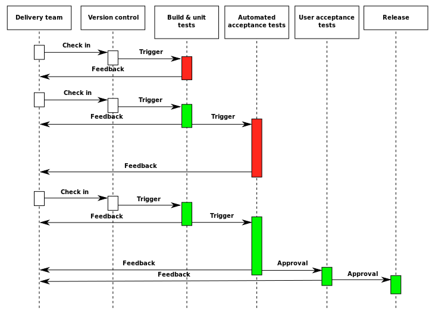

Web测试 + CI/CD
Mocha & Chai
Mocha是Node.js上的JavaScript测试框架。（参见官方文档）
Chai是断言库。
测试脚本里面应该包括一个或多个describe块，每个describe块应该包括一个或多个it块。describe块为test suite，it块为test case。
before(), after(), beforeEach(), afterEach()为hooks，done可用于异步回调。only和skip方法。（此处略，可自学）
var assert = require('assert');
describe('Array', function () {
describe('#indexOf()', function () {
it('should return -1 when the value is not present', function () {
assert.equal([1, 2, 3].indexOf(4), -1);
});
});
});
CI/CD
CI（持续集成，Continuous Integration）：是将所有软件工程师对于软件的工作副本持续集成到共享主线（mainline）的一种举措。在测试驱动开发（TDD）的作法中，通常还会搭配自动单元测试。
（极限编程中，测试驱动开发指先完成测试代码，再快速写代码完成功能。先实现功能，在测试的辅助下，快速实现其功能；再重构，在测试的保护下，通过去除冗余的代码，提高代码质量。）
在模块化的开发中，各人独立开发不同的模块时，持续集成也起到很大作用。
CD（持续交付，Continuous Delivery / 持续部署，Continuous Deployment）：持续部署指在软件开发流程中，以自动化方式，频繁而且持续性的，将软件部署到生产环境中。持续交付与持续部署的区别在于，持续交付指所有的变更都可以被部署到生产环境中，但是出于业务考虑，可以选择不部署。
Common practices
- Maintain a code repository
- Automate the build
- Make the build self-testing
- Everyone commits to the baseline every day
- Every commit (to baseline) should be built
- Every bug-fix commit should come with a test case
- Keep the build fast
- Test in a clone of the production environment
- Make it easy to get the latest deliverables
- Everyone can see the results of the latest build
- Automate deployment

现有的清华电子系学生科协网站的CI/CD方式是：通过GitHub Actions或Travis CI实现持续集成，并将代码编译后推至docker hub，由服务器端的watchtower容器自动检测镜像的更新并自动拉取运行，实现持续部署。
此讲中我们跟随GitHub Learning Lab的一个教程来学习持续集成，实验仓库公开。另外，清华大学人工智能挑战赛主网站的github actions workflow如下所示，供参考我们的CI/CD流程（科协官网使用Travis CI，可自行参阅代码）。
name: CI
on: [push, pull_request]
jobs:
build:
runs-on: ubuntu-latest
steps:
- uses: actions/checkout@v2
- uses: actions/setup-node@v1
- run: npm i -g yarn
- name: yarn install, build, and test
run: |
yarn install
yarn test
yarn build
env:
CI: true
- name: docker build
env:
CONTAINER_IMAGE_NAME: ${{ secrets.CONTAINER_IMAGE_NAME }}
DOCKER_REGISTRY_URL: ${{ secrets.DOCKER_REGISTRY_URL }}
run:
docker build -t $DOCKER_REGISTRY_URL/$CONTAINER_IMAGE_NAME:latest .
- name: docker login
uses: azure/docker-login@v1
with:
username: ${{ secrets.DOCKER_USERNAME }}
password: ${{ secrets.DOCKER_PASSWORD }}
- name: docker push
env:
CONTAINER_IMAGE_NAME: ${{ secrets.CONTAINER_IMAGE_NAME }}
DOCKER_REGISTRY_URL: ${{ secrets.DOCKER_REGISTRY_URL }}
run: docker push $DOCKER_REGISTRY_URL/$CONTAINER_IMAGE_NAME:latest
- name: docker logout
uses: azure/container-actions/docker-logout@master